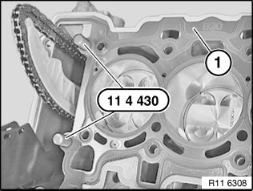
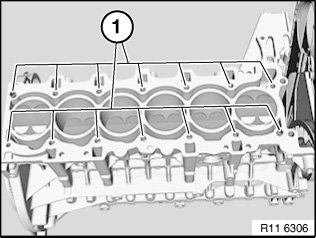
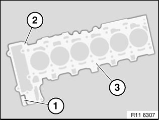
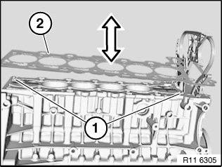

Cylinder Head Gasket: Service and Repair
11 12 101 Replacing cylinder head gasket (N52K)Special tools required:
Important!
Aluminum-magnesium materials.
No steel screws/bolts may be used due to the threat of electrochemical corrosion.
A magnesium crankcase requires aluminum screws/bolts exclusively.
Aluminum screws/bolts must be replaced each time they are released.
Aluminum screws/bolts are permitted with and without color coding (blue).
For reliable identification:
Aluminum screws/bolts are not magnetic.
Jointing torque and angle of rotation must be observed without fail (risk of damage).
Necessary preliminary tasks:
^ Remove cylinder head.

Insert 11 4 430 special tool into bores.
Remove cylinder head seal.
Important!
Check marking (1) on cylinder head gasket (B25 or B30).
^ B = gasoline engine
^ 30= displacement (3 liters)
Do not mix them up as this will cause engine damage.
There must be no fluids or contaminants in any of the threaded holes (1) for the cylinder head bolt connections.
Important!
Work on sealing surface on engine block and on cylinder head with special tool 11 4 470 only.

Do not use any metal-cutting tools.

Important!
Rubber coating (2) on cylinder head gasket (3) must not under any circumstances be damaged (electrochemical corrosion).
Cylinder head gasket (3) is a sheet-metal gasket.

Check adapter sleeves (1) for damage and firm seating.
Place cylinder head gasket (2) in direction of arrow on engine block.
Note:
Check cylinder head for deviation from flatness.
Check cylinder head for water leaks.
Assemble engine.